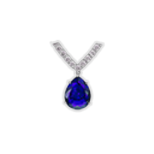
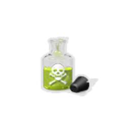
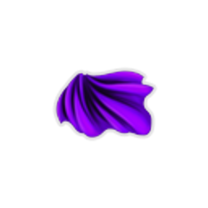
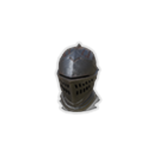
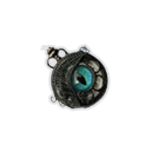
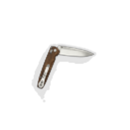

| Name |
Image |
Tier |
Pool |
Description |
Flavor |
| Shadowed Necklace |
 |
Starter |
Color_chaser |
At the start of each combat, apply 2 Targeting to a random enemy. |
A necklace with a small glass bottle, created from the abyssal darkness. |
| Scotch Stone |
|
Common |
Color_chaser |
Whenever you deal damage by triggering Targeting, deal 1 additional damage. |
A fine-grained grey stone used for sharpening weapons. |
| Box Cutter |
 |
Uncommon |
Color_chaser |
Your first Attack that triggers Targeting each turn triggers it twice. |
A very peculiar sword. So peculiar, that its purpose is unknown. |
| R-B0-7 |
 |
Uncommon |
Color_chaser |
At the start of each turn, enemies which have debuffs lose 5 HP. |
A dangerous secret weapon. Its lethality is complemented with an infamous drug. |
| Acid Solution |
 |
Rare |
Color_chaser |
Whenever you play an Attack, if you are Weak, apply 1 Weak to the enemy. If you are Frail, remove all Block from the enemy. |
Extremely corrosive. Hopefully no one else carelessly sprinkles this on something...or someone. |
| Assassin's Cloak |
 |
Rare |
Color_chaser |
At the start of each combat, Hide for 2 turns. |
This mass-produced cloak boasts the most reliable camouflage. |
| Rusty Helmet |
 |
Rare |
Color_chaser |
At the start of each turn, apply 1 Blindsided to ALL enemies. |
An old helmet used in wars of the past. It's unlikely to see use today. |
| Broken Ticker |
 |
Boss |
Color_chaser |
At the start of each combat, apply Slow to ALL enemies. |
It is already broken, yet a faint ticking can still be heard. |
| Masked Shadows |
|
Boss |
Color_chaser |
Replaces Shadowed Necklace. At the start of your turn, apply 1 Targeting to ALL enemies and trigger Targeting once. |
Behind a mask, nobody can see the abyss. |
| Pocket Knife |
 |
Boss |
Color_chaser |
After Target is triggered for the fourth time each turn, gain [E] . |
A portable knife used to cut ropes. |
| Letter of Request |
 |
Shop |
Color_chaser |
At the start of each combat, apply 3 Targeting to ALL enemies. |
A letter of request from an unknown client. |
{kind=link}
{kind=link}
{kind=link}
{kind=link}
{kind=link}
{kind=link}
{kind=link}
{kind=link}
{kind=link}
{kind=link}
{kind=link}